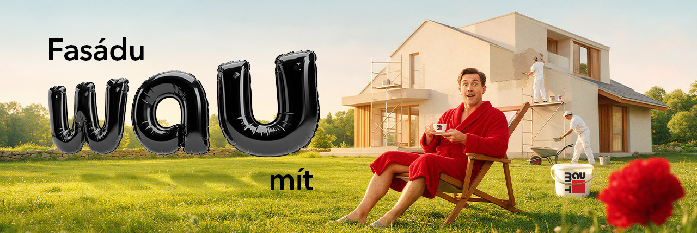
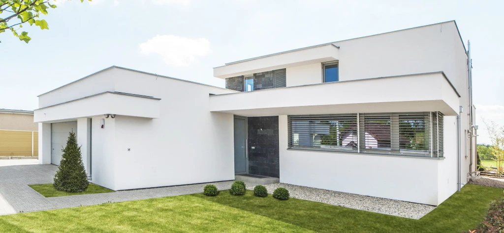
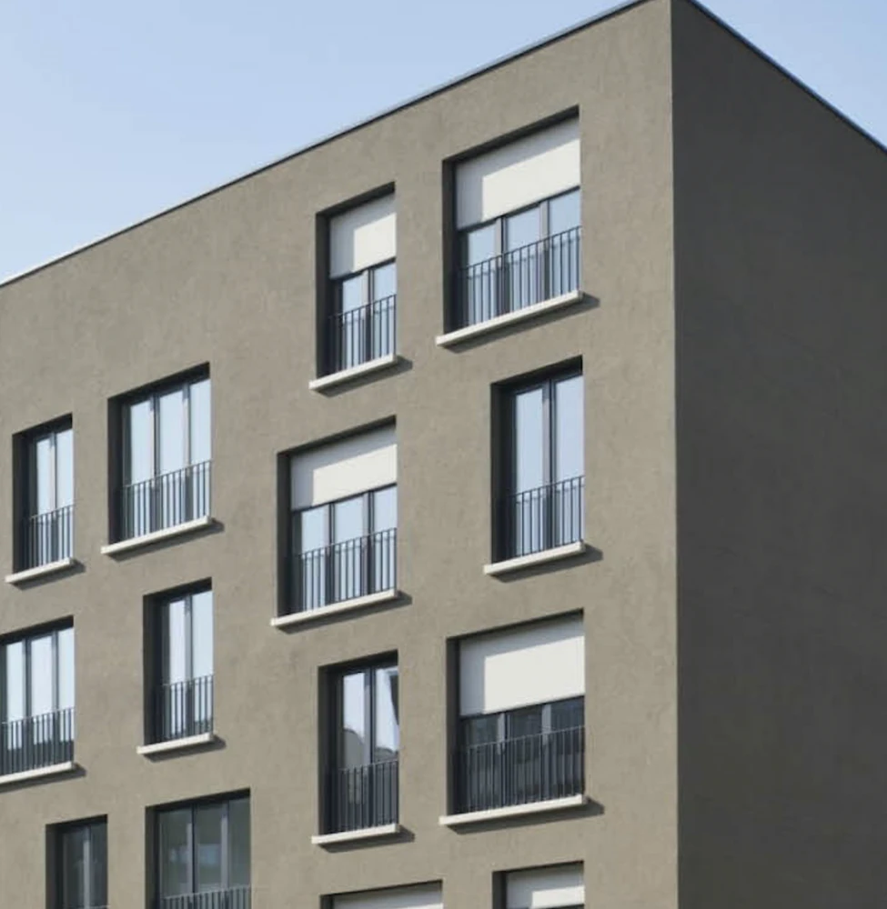
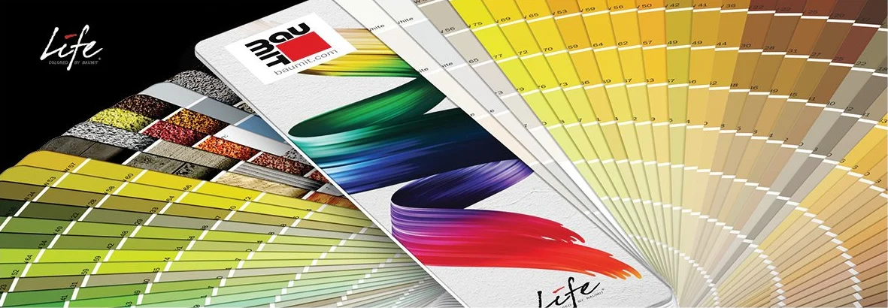
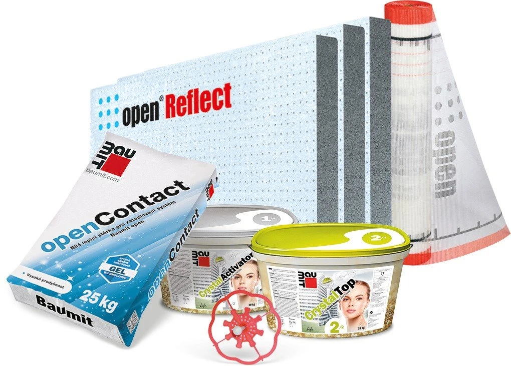
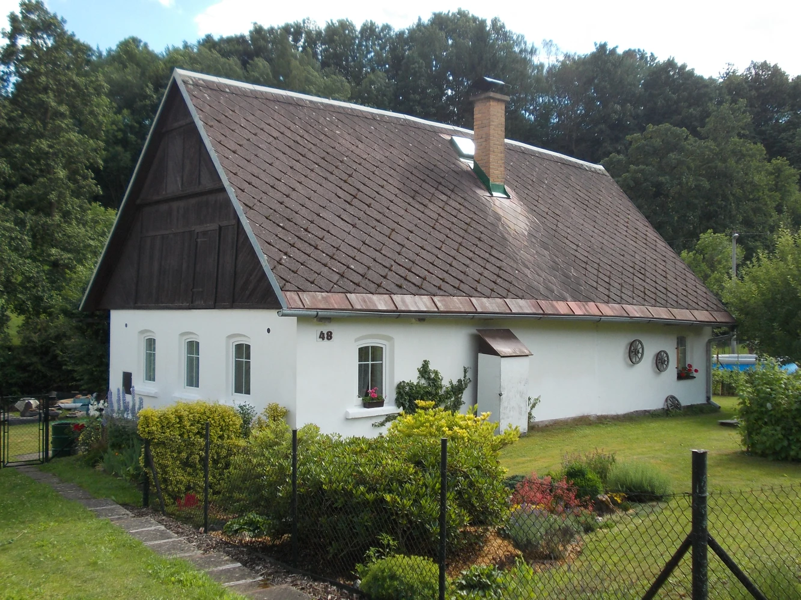
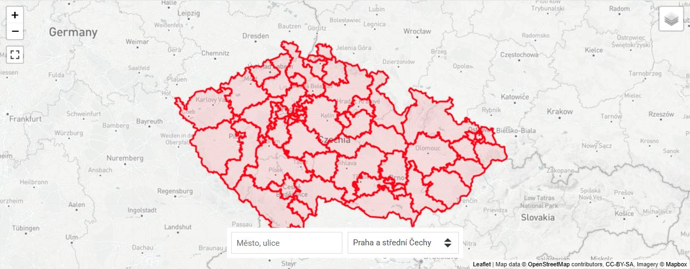

Nejste na to sami
Pomůžeme vám s výběrem vhodného řešení i přípravou realizace.

Zateplení, omítka nebo nová barva?
S Baumitem máte po ruce kompletní fasádní řešení i odbornou pomoc. Poradíme s výběrem, zdarma naceníme materiál a doporučíme prověřenou realizační firmu. Ať stavíte, rekonstruujete nebo zvelebujete chalupu, cesta k nové fasádě může být příjemně jednoduchá.
Chci wau fasáduPomůžeme vám s výběrem vhodného řešení i přípravou realizace.
Nemusíte hledat realizační firmu naslepo. Doporučíme vám prověřené a vyškolené odborníky.
Na kompletní zateplovací systém Baumit vám prodloužíme záruku na 60 měsíců.
Prémiový zateplovací systém Baumit open získáte s výrazným cenovým zvýhodněním.
Nemusíte mít ještě ve všem jasno. Napište do formuláře, co plánujete, a odborník Baumitu vám pomůže zorientovat se v možnostech i dalších krocích.
Někdo staví nový dům, jiný chce obnovit stávající fasádu. Baumit nabízí systémy i jednotlivé povrchové úpravy pro různé typy staveb a jejich potřeby.

Kompletní skladba vrstev, které společně zajišťují tepelnou ochranu domu a vytvářejí základ pro novou fasádu.
Prohlédnout
Pro dokončení novostavby i renovaci fasády. Zvolte si povrch, strukturu a odstín podle svého domu.
Prohlédnout

Prémiový, difuzně otevřený zateplovací systém. Právě nyní ho navíc získáte s výrazným cenovým zvýhodněním.
ProhlédnoutPři stavbě nového domu chcete, aby fasáda vypadala přesně podle vašich představ a správně fungovala. S Baumitem vyberete vhodný systém, omítku i barvu. Podobu fasády si navíc můžete předem vyzkoušet.
Řeším novostavbuVáš dům si zaslouží dobrou péči. Poradíme s obnovou fasády, zdarma naceníme materiál a doporučíme prověřenou realizační firmu.
Řeším rekonstrukci
Na chalupu jezdíte hlavně odpočívat. Pomůžeme vám vybrat vhodné řešení pro její fasádu, abyste místo složitého rozhodování mohli plánovat další víkend.
Řeším chalupuOzvěte se našemu odborníkovi a popište, jestli stavíte, rekonstruujete nebo chcete změnit vzhled fasády.
Pomůžeme s výběrem systému, omítky či barvy. Můžete využít vizualizaci, vzorky i bezplatné nacenění materiálu.
Vybrané materiály pořídíte u prodejců Baumit. Najděte si nejbližší prodejní místo.
Doporučíme prověřenou realizační firmu, poradíme na stavbě a u uceleného zateplovacího systému zajistíme dopravu zdarma.

Pomůže vám vybrat materiály, odhadnout potřebné množství a spočítat jejich cenu.
Otevřít kalkulátorBarvu a strukturu fasády uvidíte na skutečných vzorcích. Každý třetí máte zdarma a doručíme vám je bezplatně.
Objednat vzorkyUkáže vám různé barevné varianty na fasádě domu ještě před realizací.
Vyzkoušet vizualizaciNechte se inspirovat hotovými realizacemi s materiály Baumit a objevte barevnou paletu Baumit Life. Vyberte si odstíny a jejich kombinace podle vlastního vkusu a představ o nové fasádě.
Ne. Stačí nám popsat, co plánujete. S výběrem vhodného řešení vám pomůžeme.
Ano. Baumit nabízí kompletní zateplovací systémy i samostatné fasádní omítky a barvy.
Ano. Vhodné řešení závisí na konkrétním stavu objektu a rozsahu plánovaných úprav.
Váš dotaz podle PSČ místa stavby předáme příslušnému odborníkovi Baumitu, který se vám ozve.
Plánujete novou fasádu nebo rekonstrukci té stávající? Ozvěte se nám. S výběrem vhodného řešení i přípravou realizace vám pomůžeme.
Chci poradit s fasádou